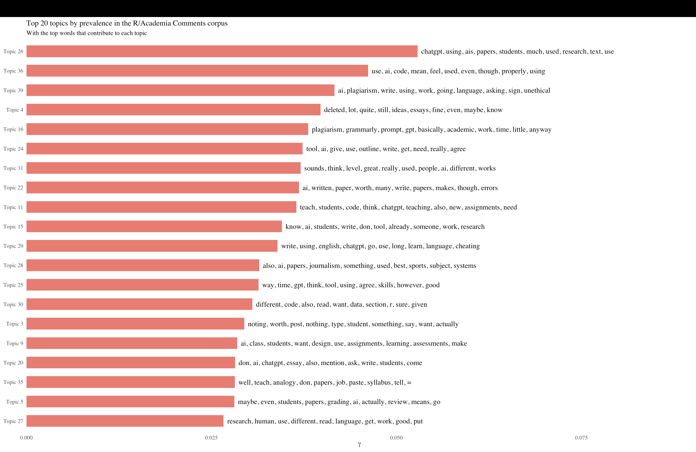
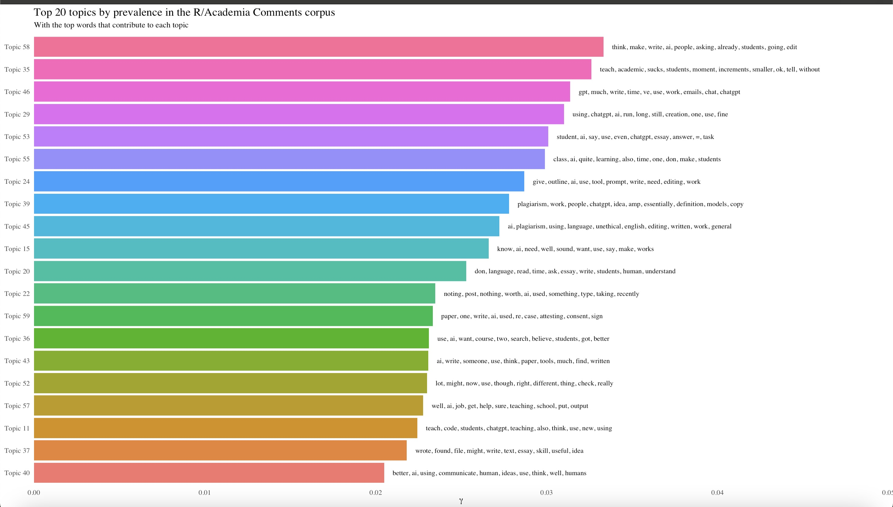
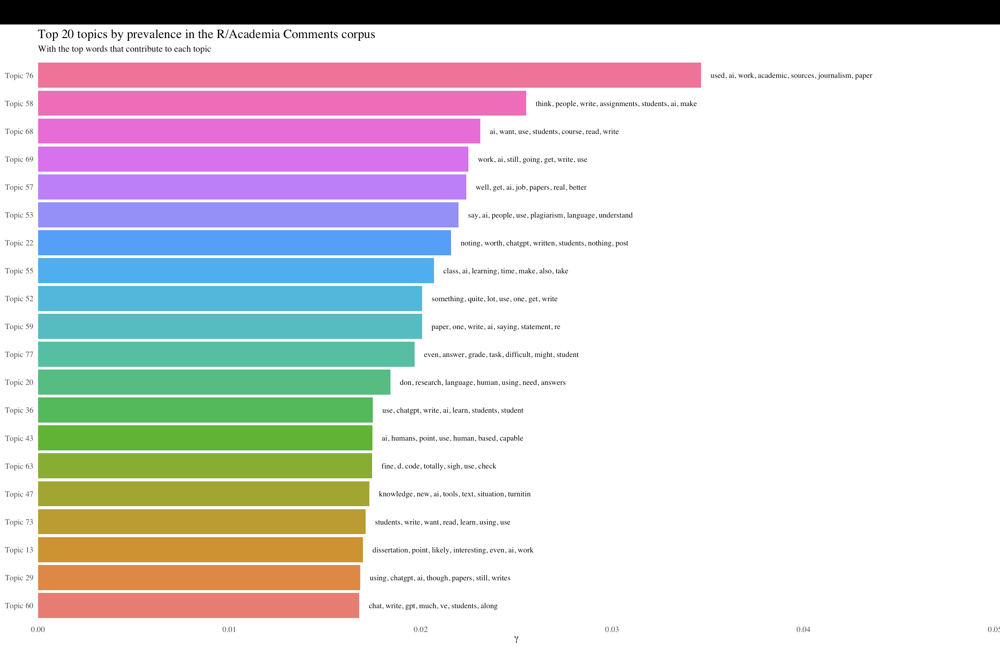

r/Academia Corpus
About r/Academia
r/Academia is also a subreddit where academics engage in conversations about issues in academia. The group is self described as ““An online community for sharing academic works and discussion of issues and events relating to academia and the related political, economical, and social structures.”
Note: The methods I described on the r/techicalwriting page are the same methods I used here so I do not go into as much detail on this page and do not repeat the codes.
Scraping
Like I did for r/technicalwriting, I scraped from this subreddit using the RedditExtractoR package. The keywords for this scrape were “AI and Writing” right from the onset. This scrape produced 23 initial threads and 389 comments which I cleaned to retain just the comments column and went ahead to process the data.
Manual Reading of Corpus
I manually read through the comments corpus for this subreddit and realized, unsurprisingly, that a few comments were not really about AI and writing. Not wanting these irrelevant comments to skew my results the wrong way, I noted the specific rows of columns which I did not want in my data and excluded them using the code ChatGPT showed me. This manual perusal and exclusion of rows of comments left me with 356 rows of comments which I used for the analysis.
```{r}
AiwritcommentsTM <- read_csv("data_out/Aiwritcomms_select.csv")
glimpse(AiwritcommentsTM)
rows_to_exclude <- c(3, 5, 6, 7, 8, 10, 15, 17, 20, 26, 29, 30, 60, 360, 361, 362, 363, 364, 365, 366, 367, 369, 371, 372, 373, 374, 375, 376, 377, 378, 383, 388, 389)
# Exclude specific row numbers
AiwritcommentsTM <- AiwritcommentsTM[-rows_to_exclude, ]
```Preprocessing
In preparing this data for the topic modeling analysis I first created a corpus of the comments column. Next, I created word tokens from the data and removed stopwords, punctuations and urls. I then created a document feature matrix (dfm) of the tokens. After this step I inspected the topwords and noticed certain words like “can”, “like”, “just”, and “will” being represented as topwords. From experience, these words could dominate my topics and skew my results so I went back to the tokens and excluded those words as well. Finally, I converted the dfm to stm.
K selection
My selection of K, which is the number of topics, was quite random. I tried to model K but I could not get the code to work so I randomly run the topic model with K set to 40, 60 and 80 and chose the K that produced the most meaningful and interesting topics. Below are images of the top 20 topics produced by each of these Ks.
K=40

K=60

K=80

Topics of Interest
My interpretation of these topics took the same form as that of the topics from r/technicalwriting. I considered both the topwords and FREX words and consulted the corpus for context.
Topic 26 - Specific ways students are using AI/Chatgpt
Highest Prob: chatgpt, using, ais, papers, students, much, used, research, text, use, answers, style, editing, provide,
FREX: ais, chatgpt, style, provide, available, summarizing, efficient, manage, amp, wrote, editing, critique, order
Topic 16 - AI use and plagiarism
Highest Prob: plagiarism, grammarly, prompt, gpt, basically, academic, work, time, little, anyway, give, say, bad, write, used
FREX: grammarly, prompt, basically, plagiarism, gpt, little, anyway, ok, services, create, academic, uni, bad, come
Topic 22 - Unreliability of AI
Highest Prob: ai, written, paper, worth, many, write, papers, makes, though, errors, publishers, nothing, fact, chatgpt, comment
FREX: publishers, worth, comment, written, bs, many, paper, _decrease_, variable